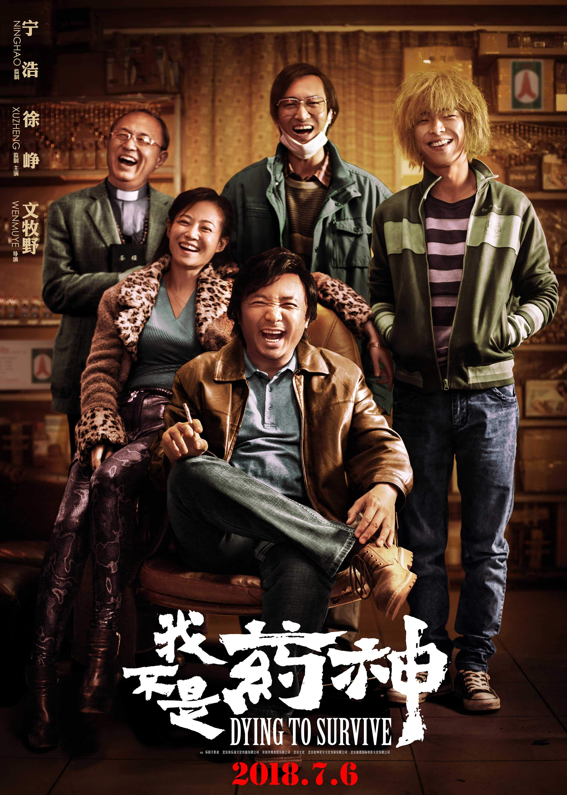
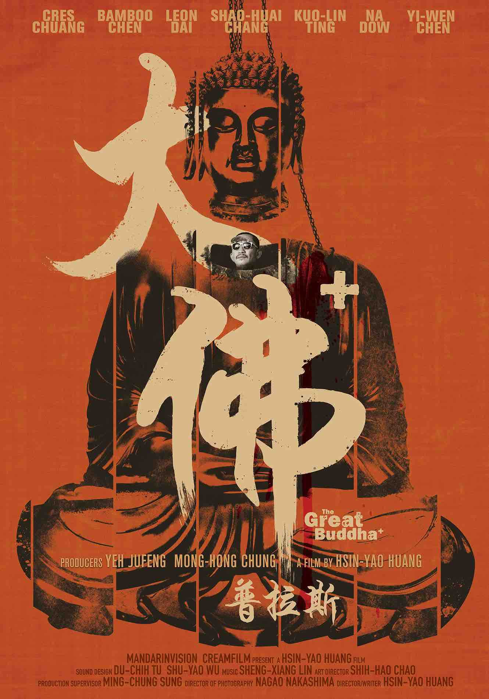
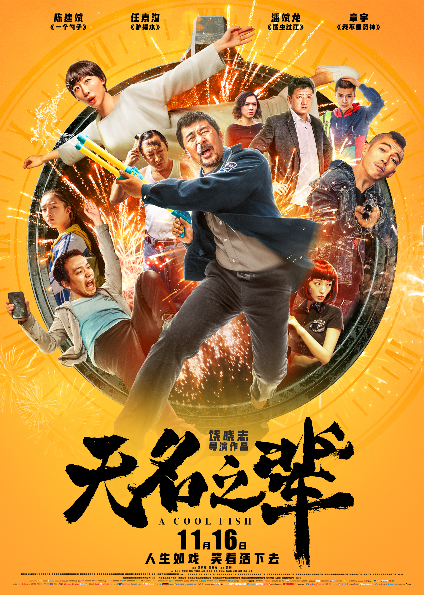
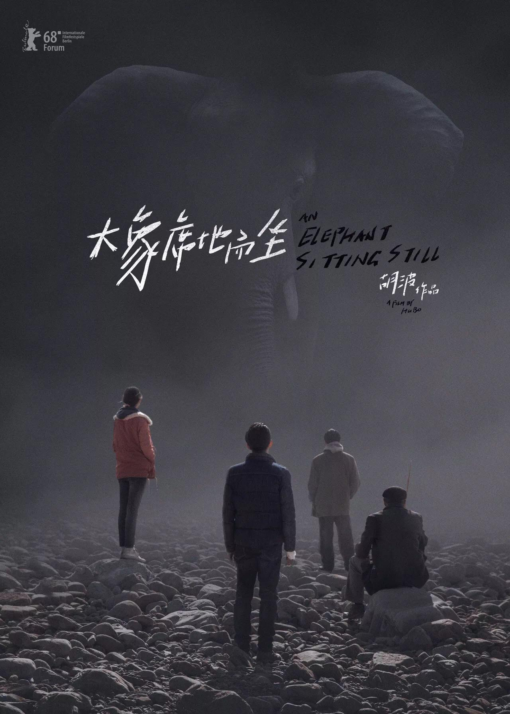
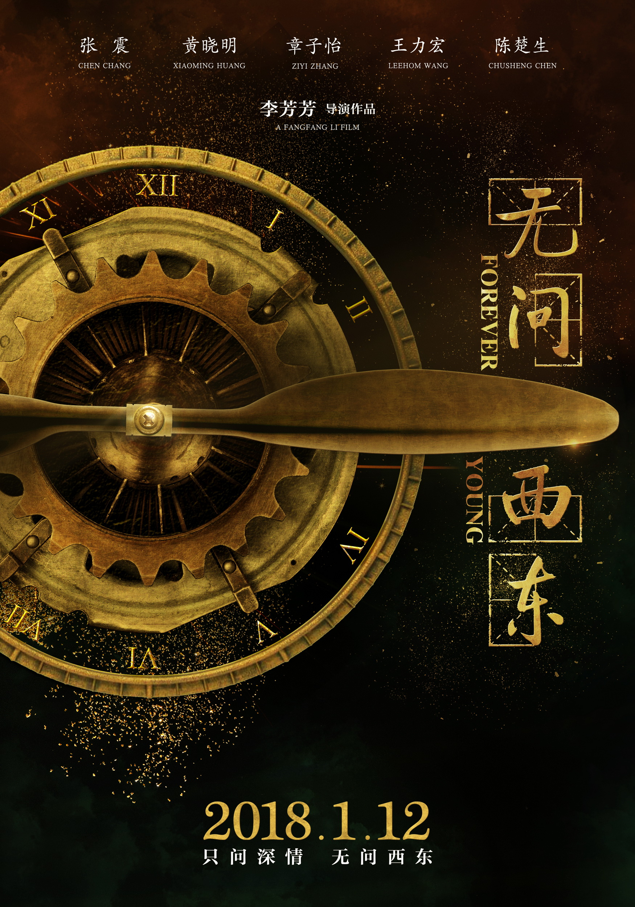

北落的观影报告


热点新闻
更多>每日佳片
 The world's full of lonely people afraid to make the first move.
这世上到处都是害怕主动迈出第一步的孤独之人。
——2018《绿皮书》
The world's full of lonely people afraid to make the first move.
这世上到处都是害怕主动迈出第一步的孤独之人。
——2018《绿皮书》
第91届奥斯卡金像奖最佳影片
热门影评
更多>-

《美国工厂》
各安其份，丰衣足食
老板要爱护员工，员工要尽忠职守，工会要合理平衡，企业（股东）要追求合理的利润，这样才能多方共赢，持续成长
观影报告:<寄生虫>
2019-08-25
谁才是这个社会真正的"寄生虫"?
观影报告:<绿皮书>
2019-08-17
孤独与喧嚣，构成人生的全部迷局。
观影报告:<何以为家>
2019-08-12
“你为什么要起诉父母？”“因为生了我。”
一周口碑榜
- 1. 罗小黑战记
- 2. 美国工厂
- 3. 徒手攀岩
- 4. 黎明忽至
- 5. 花椒之味
- 6. 冠军
- 7. 母亲去世时
- 8. 罗茜
- 9. 一百样东西
- 10. 零零后
2018评分最高的国产电影

我不是药神
豆瓣评分TM
在我们刚刚经历过的时代巨变洪流之中，有无数这样的小人物在时代洪流中艰难生存着，同时在竭力不丢失他们的灵魂。终于有这样一部电影，让我们能够看到时代，看到善意，看到希望。希望这部电影也能被这个时代善待。——张小北
2018评分最高的国产电影

大佛普拉斯
豆瓣评分TM
你永远不会知道他人的皮囊之下，到底藏着什么样的秘密。就像你不会知道，万人朝拜的菩萨肚子里有一具死尸，也不会知道一个收垃圾的大叔，屋子里摆满了洋娃娃。——亚比煞
2018评分最高的国产电影
红海行动
豆瓣评分TM
超出预期，非常刺激，最后几场大战，血肉横飞，估计创下了近些年华语战争题材尺度之最。片尾没有强行拔高主题，或充斥个人英雄主义的色彩，整部影片都是一场接一场紧凑且高难度的任务，山地、沙漠、空降各类地形和作战任务几乎都涉及到了，狙击和营救的部分格外惊险，结尾亦干脆有力。——cult
2018评分最高的国产电影

狗13
豆瓣评分TM
原来我们都是这样长大的……或者说，如果没有共鸣，你知不知道你有多幸运……——Mumu
2018评分最高的国产电影
无双
豆瓣评分TM
郭富城演怂逼演的真好！
2018评分最高的国产电影

无名之辈
豆瓣评分TM
超出预期，导演太坏了，先让人笑再让人哭。在你以为它不过是部闹喜剧时，突然揭开幕布，露出小人物们的苦楚现实。任素汐失去尊严那场戏可入选年度段落，也从那刻导演才说出他真正的话语：每个看似滑稽小丑的无名之辈，都有着不为人知的悲喜与坚持。马嘉祺和马先勇隔门对话很催泪，演员都很出彩，结尾稍崩，但依旧是国产片里难得的佳作。——掉线
2018评分最高的国产电影
爆裂无声
豆瓣评分TM
对于平均水准以上的年轻导演，应毫不吝啬予以鼓励，对于年龄一大把了还言之无物的导演，才要无情打击。——文文周
2018评分最高的国产电影
血观音
豆瓣评分TM
棠府群娥，个个明是一盆火，暗是一把刀。深宅大院，夜半三更，最宜粉墨登场。你只道这群贼婆娘干着双手染血的勾当，咒诅她们永堕无间地狱，却不曾想如果活得不这样机关算尽，那人吃人的弹丸之地，怕是也不容她们立足。迎来送往，不过本能，血雨腥风，哪来往生极乐。此间便是地狱，人不像人，鬼不像鬼。——喵尔摩丝
2018评分最高的国产电影

大象席地而坐
豆瓣评分TM
结尾剧作和台词都露了馅，陷入一种偏执的无路可走，但这个死胡同其实是假的，是作者自己给自己按上去的，他当然知道出路或许是可能的，但他不相信，不相信事情和人是会变的，他更愿意相信那个死胡同，那个速朽的永恒。无论是电影还是真实生活。——Peter
2018评分最高的国产电影

无问西东
豆瓣评分TM
孤坟葬着未亡者，枯井跳下活死人。你会一点命理，却摸不透时代脉搏；我懂一些句读，仍划不掉此生灾祸。沙海苍茫，惦念着远方的你治愈情痛；山河破碎，曾记得少年意气胸怀家国。这里有百子争鸣，可静坐听雨，能丈量核变，共天地俊秀。这水木清华见证了百年兴衰，世事变迁。还有无数情深，正在漠漠跋涉。——西楼尘
我不是药神
大佛普拉斯
红海行动
狗13
无双
无名之辈
爆裂无声
血观音
大象席地而坐
无问东西